Rondje Venray
24,5 km1 u 30
24,5kmAfstand
1 u 30Duur
Start Oostrum · 11 min fietsen
Knooppunten 65 · 15 · 27 · 26 · 25 · 24 · 18 · 98 · 97 · 99 · 19 · 21 · 22 · 23 · 64 · 63 · 65
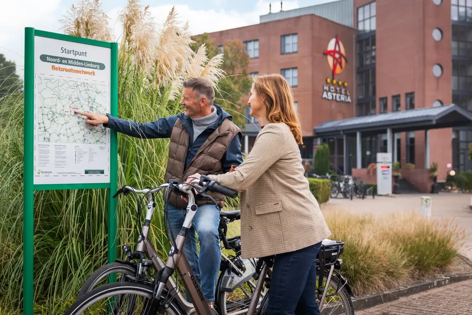
Tien fietsroutes rond Venray. Zeven ervan beginnen op een paar minuten fietsen van je hotelkamer.
Zeven routes volgen het knooppuntennetwerk dat vlak bij het hotel begint: je stapt op en volgt de bordjes. Drie langere routes starten een stukje verder, in Overloon en Meterik. Neem de route mee op je telefoon of vraag hem op papier bij de receptie.
24,5 km1 u 30
Start Oostrum · 11 min fietsen
Knooppunten 65 · 15 · 27 · 26 · 25 · 24 · 18 · 98 · 97 · 99 · 19 · 21 · 22 · 23 · 64 · 63 · 65
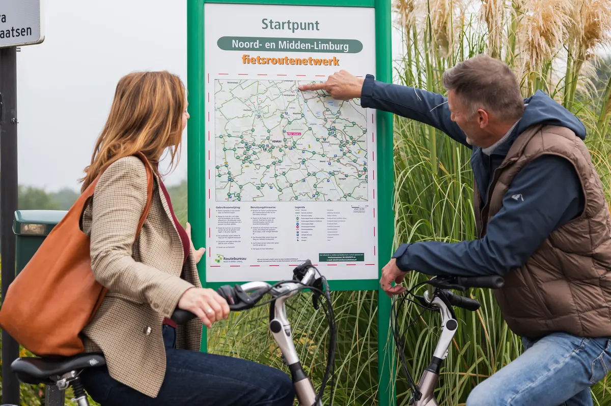
30,4 km1 u 55
Start Oostrum · 6 min fietsen
Knooppunten 65 · 46 · 57 · 40 · 89 · 68 · 80 · 30 · 67 · 66 · 71 · 12 · 13 · 7 · 39 · 61 · 62 · 63
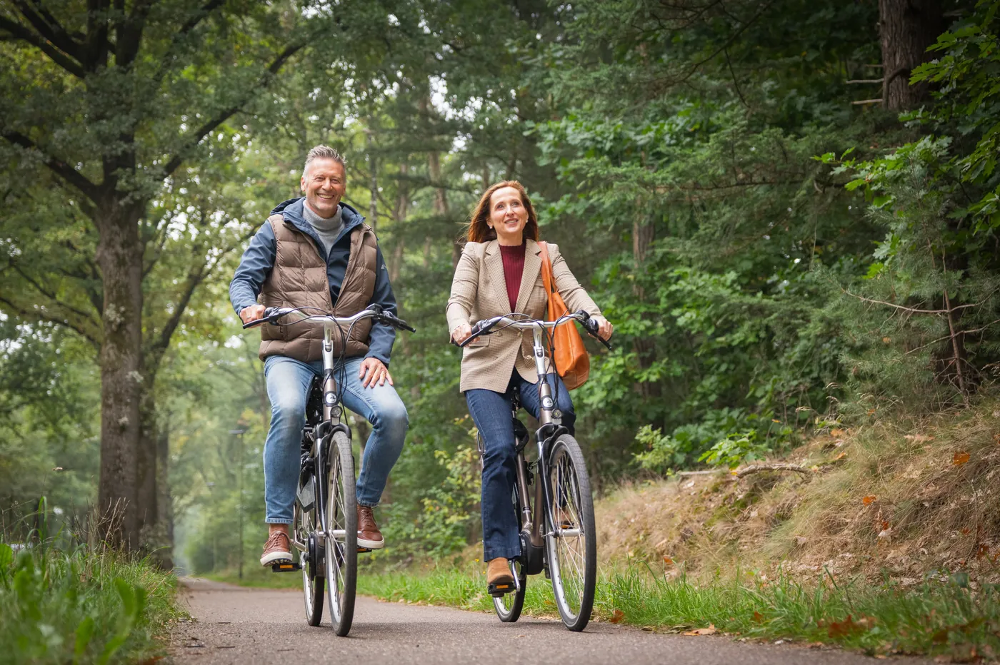
41,1 km2 u 35
Start Oostrum · 5 min fietsen
Knooppunten 63 · 64 · 16 · 51 · 38 · 52 · 11 · 58 · 14 · 15 · 27 · 62 · 64 · 28 · 65 · 66 · 71 · 12 · 13 · 7 · 39 · 61 · 46 · 65 · 63
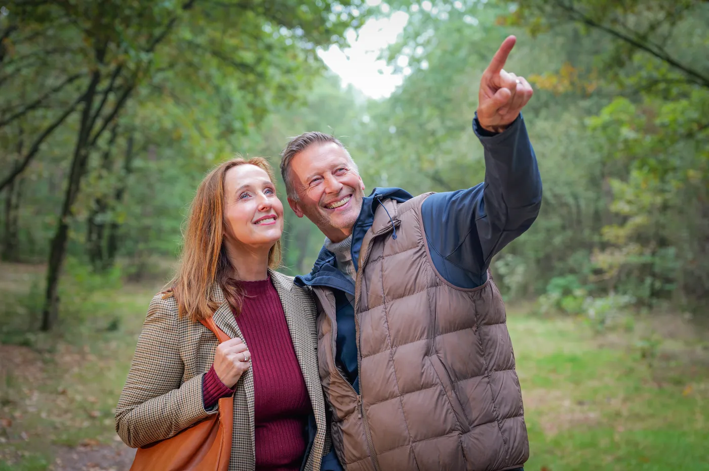
42 km2 u 40
Start Oostrum · 5 min fietsen
Knooppunten 63 · 64 · 23 · 22 · 21 · 19 · 99 · 97 · 96 · 89 · 1 · 25 · 85 · 84 · 83 · 42 · 40 · 41 · 6 · 4 · 5 · 81 · 82 · 21 · 22 · 20 · 17
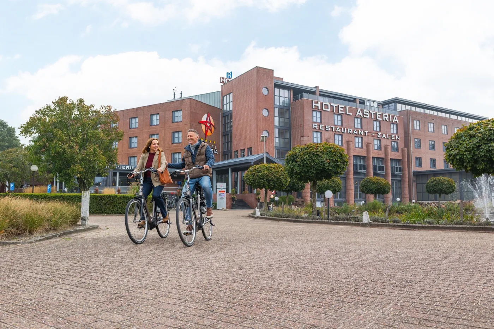
49,4 km3 u 05
Start Oostrum · 5 min fietsen
Knooppunten 63 · 64 · 16 · 51 · 80 · 50 · 69 · 54 · 53 · 9 · 57 · 90 · 89 · 86 · 72 · 88 · 65 · 5 · 81 · 82 · 21 · 22 · 20 · 17

52,4 km3 u 15
Start Oostrum · 5 min fietsen
Knooppunten 63 · 62 · 61 · 39 · 7 · 13 · 12 · 18 · 59 · 14 · 15 · 27 · 62 · 64 · 75 · 73 · 74 · 55 · 63 · 49 · 47 · 46 · 94 · 93 · 25 · 70 · 56 · 57 · 9 · 10 · 11 · 52 · 38 · 51 · 16 · 62 · 63
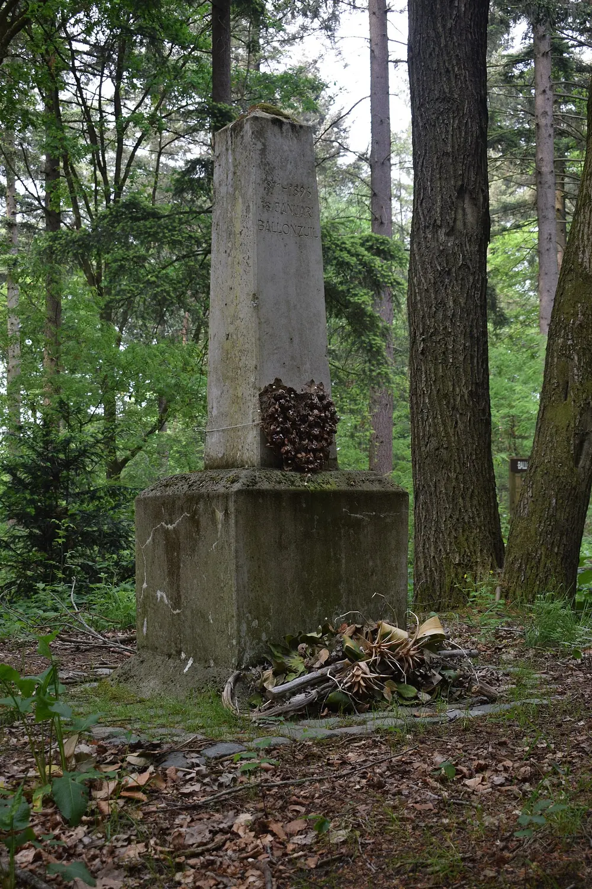
51,5 km3 u 15
Start Venray · 13 min fietsen
Knooppunten 17 · 26 · 27 · 15 · 56 · 50 · 31 · 30 · 45 · 49 · 28 · 11 · 12 · 13 · 47 · 60 · 42 · 41 · 11 · 10 · 48 · 76 · 75 · 92 · 14 · 93 · 72 · 24 · 25 · 20 · 17
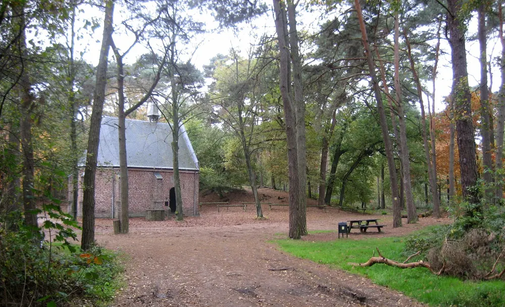
33,72 km1 u 58594 kcal45 m
Start Overloon · 8 min rijden
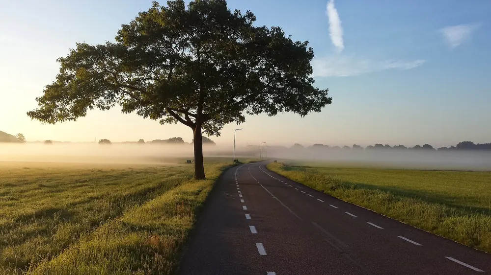
54,94 km3 u 13968 kcal59 m
Start Meterik · 12 min rijden
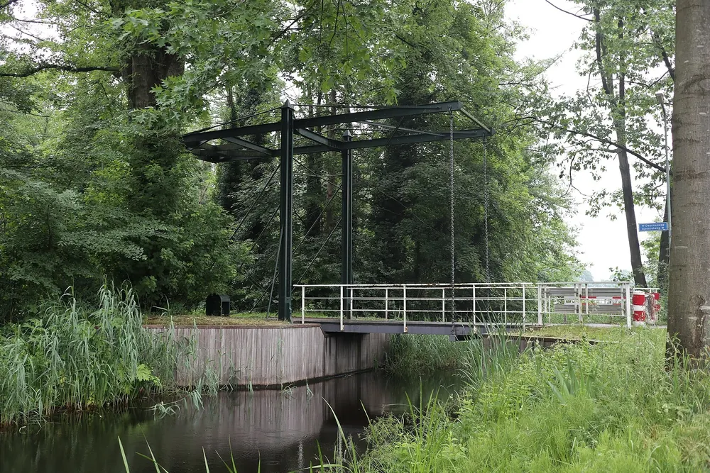
58,8 km3 u 271036 kcal49 m
Start Meterik · 12 min rijden
Zo liggen de tien routes rond het hotel. Tik op een nummer en de kaart zoomt naar die route.
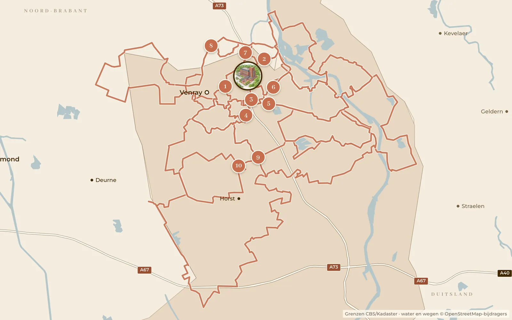
Alles voor een dag fietsen regel je bij de receptie.
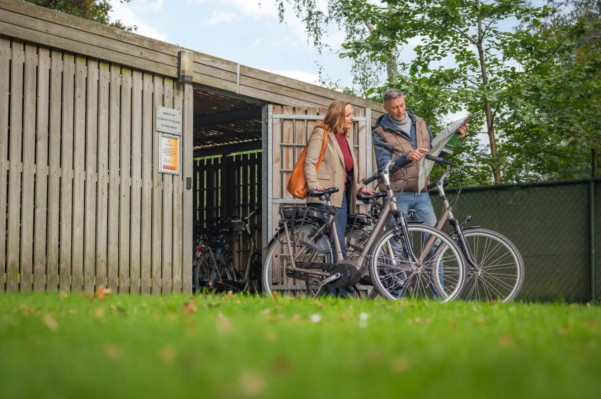
FietsenstallingAfgesloten en overdekt, ook voor je e-bike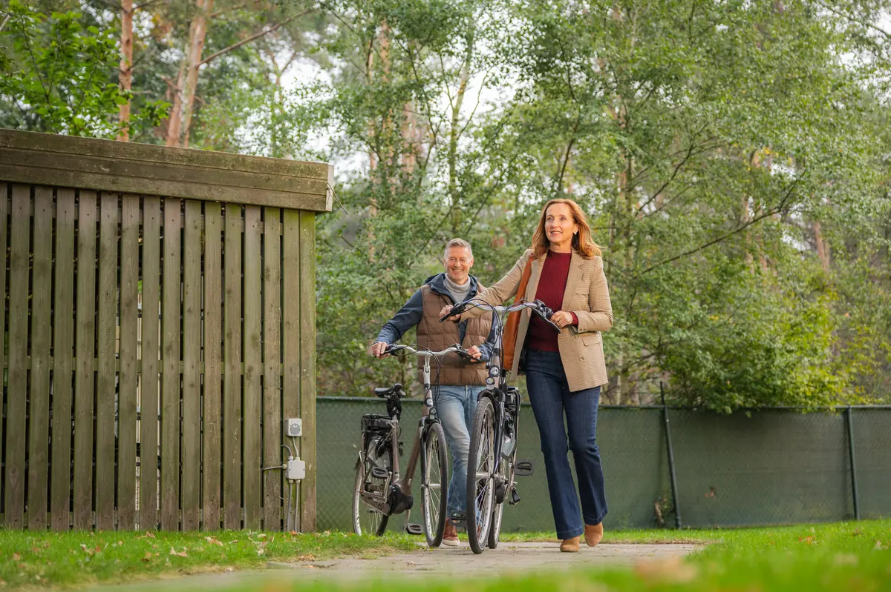
E-bike opladenJe accu laad je bij ons weer op LunchpakketVoor onderweg, vraag ernaar bij de receptie
LunchpakketVoor onderweg, vraag ernaar bij de receptie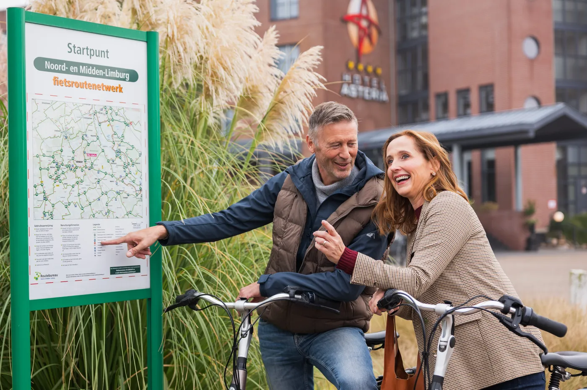
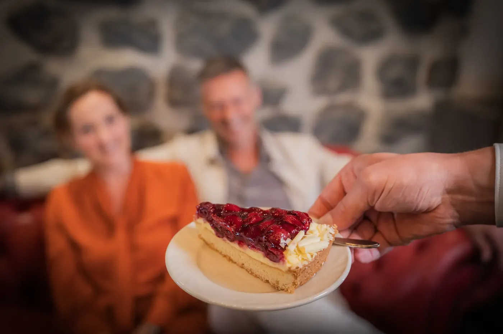
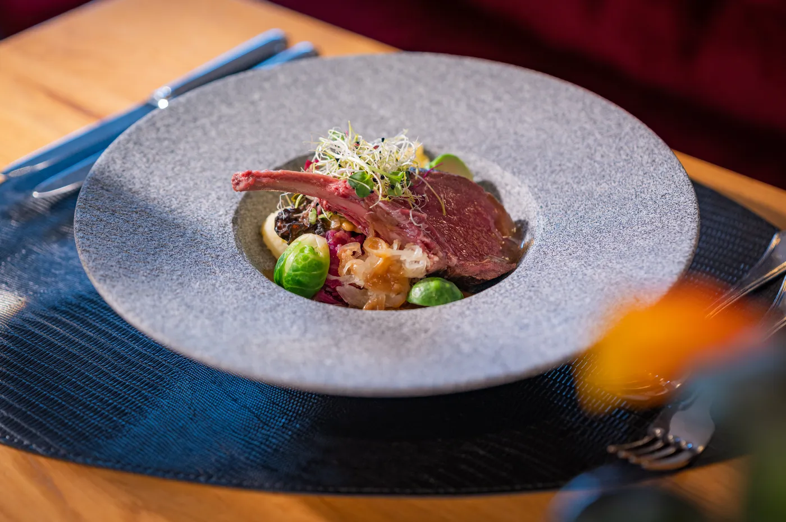
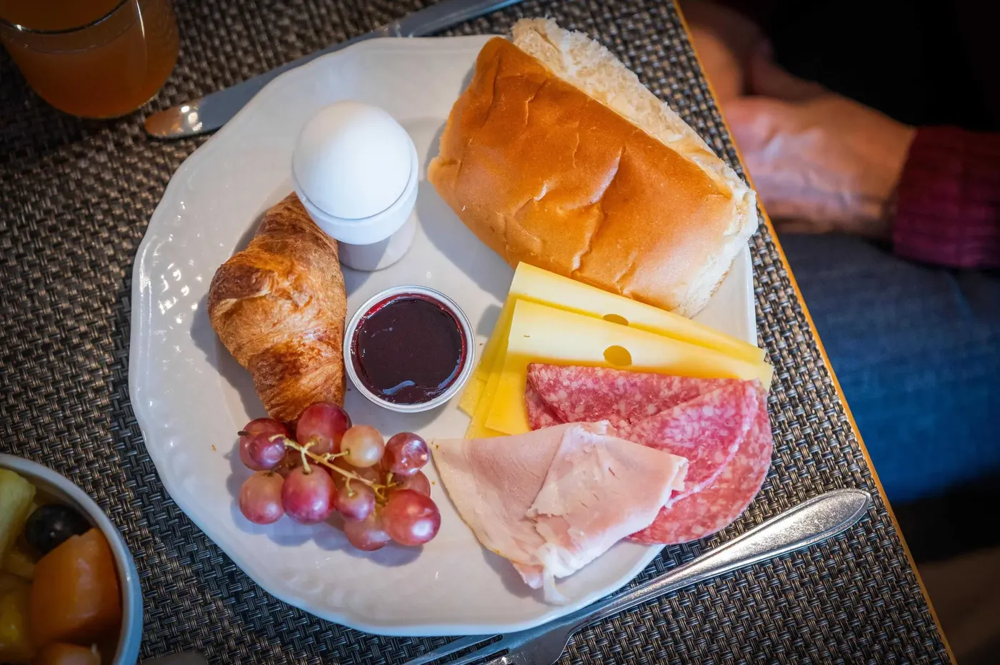
Drie nachten in Venray met drie dagen een elektrische fiets. De prijs voor jouw datums zie je direct bij het boeken.
Ja. Bij de receptie huur je een gewone fiets of een e-bike. Laat het bij het boeken of bij aankomst weten, dan zetten we hem voor je klaar.
In onze afgesloten, overdekte fietsenstalling naast het hotel. Heb je onderweg een lekke band gehad, dan lenen we je een fietspomp en een reparatieset.
Ja. Je accu laad je bij ons op, zodat je de volgende ochtend weer vol op pad gaat. De receptie wijst je waar.
Elke route opent met de knop bij de route op Fietsknoop of routiq, ook op je telefoon. Bij de receptie liggen gratis fiets- en wandelroutes op papier.
Met Rondje Venray: 24,5 kilometer op het knooppuntennetwerk vlak bij het hotel, langs het Annapark en over de Weverslose Berg, het hoogste punt van Noord-Limburg.
Wandelroutes van een korte ochtend tot een hele dag, van de jeneverbessen bij Smakt tot de Mariapeel. Wandelkaarten haal je bij de receptie.
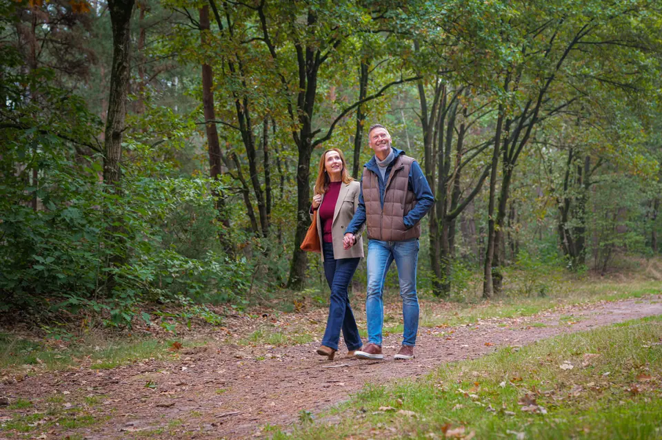
Foto's van Wikimedia Commons: ERRRor (CC BY-SA 4.0); Michael Coury mjcoury (CC0); Maarten Sepp (CC BY-SA 3.0); Busspotter (CC BY-SA 4.0); Vincent van Zeijst (CC BY-SA 4.0); Dosseman (CC BY-SA 4.0); giggel (CC BY 3.0); Steven Lek (CC BY-SA 4.0); B. Hulshoff (CC BY-SA 4.0); Klankbeeld (CC0); Havang(nl) (CC0); Stichting Saxifraga (CC BY-SA 3.0).

Boek je verblijf en stap morgen bij de deur op de fiets.